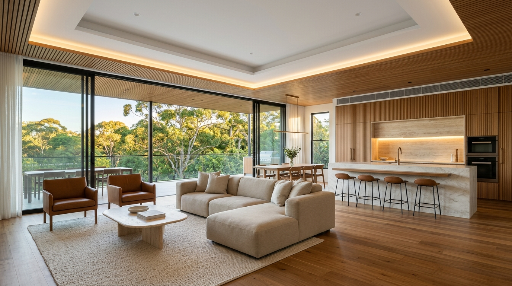
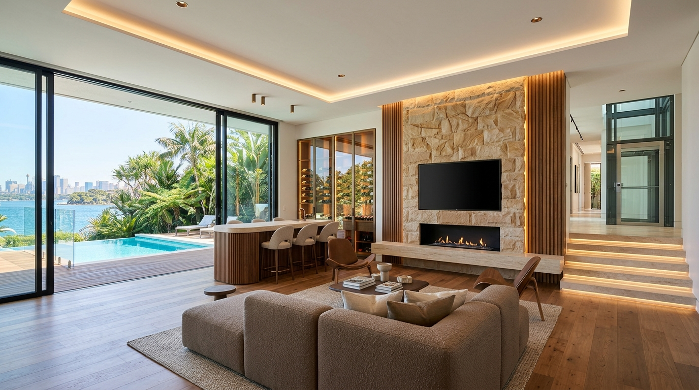
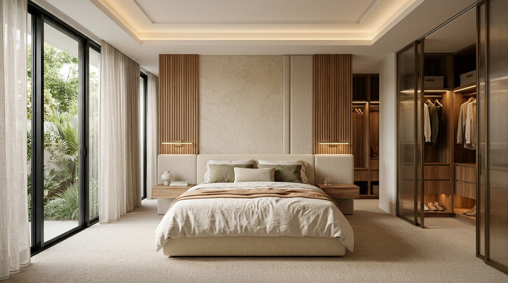
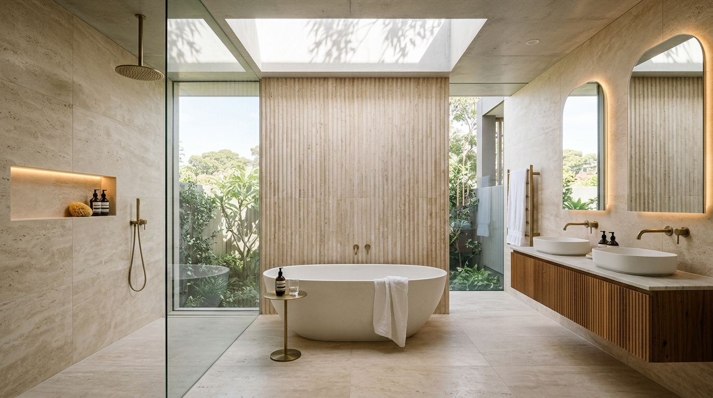
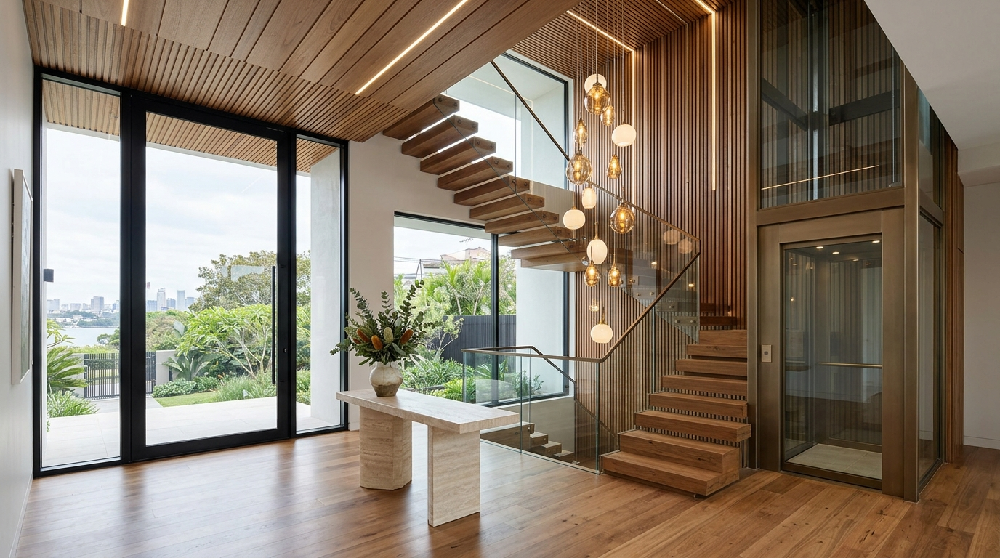
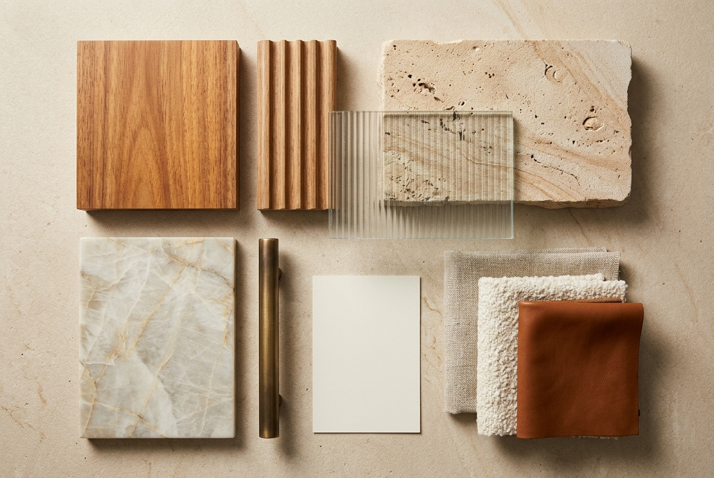

Hoop Pine Place, West Pennant Hills NSW 2125. Four A3 boards, six renders, two CAD revision plans and joinery elevations, with the native DXF / DWG files. Contest #2801036.

render1 gf living kitchen hero

render2 lgf entertainment bar

render3 master bedroom suite

render4 master ensuite bathroom

render5 entry stair lift lobby

render6 material moodboard flatlay
| File | Content | Size |
|---|---|---|
| Hoop_Pine_Place_CC200_LGF_Interior_Markup.dxf | exchange file | 2,801 KB |
| Hoop_Pine_Place_CC201_GF_Interior_Markup.dxf | exchange file | 2,562 KB |
| Hoop_Pine_Place_CC200_LGF_Interior_Markup.dwg | R2000 DWG | 1,153 KB |
| Hoop_Pine_Place_CC201_GF_Interior_Markup.dwg | R2000 DWG | 933 KB |
| Hoop_Pine_Place_Sydney_Interior_Concept_A3.pdf | 4-page A3 landscape | 5,402 KB |
| Hoop_Pine_Place_Sydney_Interior_Master_Pack.zip | boards, renders, CAD sheets, DXF / DWG, PDF | 17,725 KB |
The artifact audit passed; design coordination is open. These are items where the brief and the source CAD differ, and how each is treated.
| ID | Item | Treatment |
|---|---|---|
| COORD-01 | Entertainment cabinet / clearance | Remove only the 34 identified cabinet entities. Net gain 220 mm outside the hearth; the brief's +420 assumes a 600 mm cabinet and is not a measured gain. |
| COORD-02 | EL-01 span | Clearly marked UNCOORDINATED CONCEPT SPAN. The plan uses a 3600 mm feature, with 400 / 2800 / 400 bays. |
| COORD-03 | GF living / kitchen ceiling | Show both datums; higher ceiling requires architectural coordination. |
| COORD-04 | D14 sliding glazing | Label D14 as 8000 mm source door; do not present 9000 as its measured opening. |
| COORD-05 | ENS.0 fixture fit / W.I.P door | Fixture and 900 mm leaf shown as design intent, not a verified fit or an enlarged structural opening. |
| COORD-06 | EL-02 6800 mm straight wall | Not represented as a measured straight site wall; retained window, pantry opening and services require coordination. |